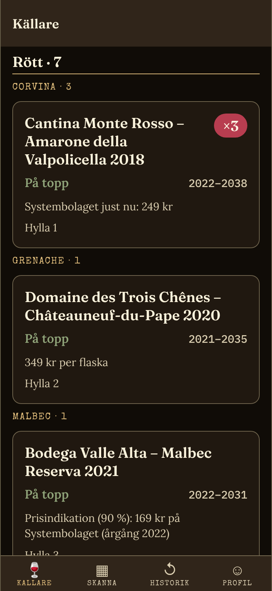
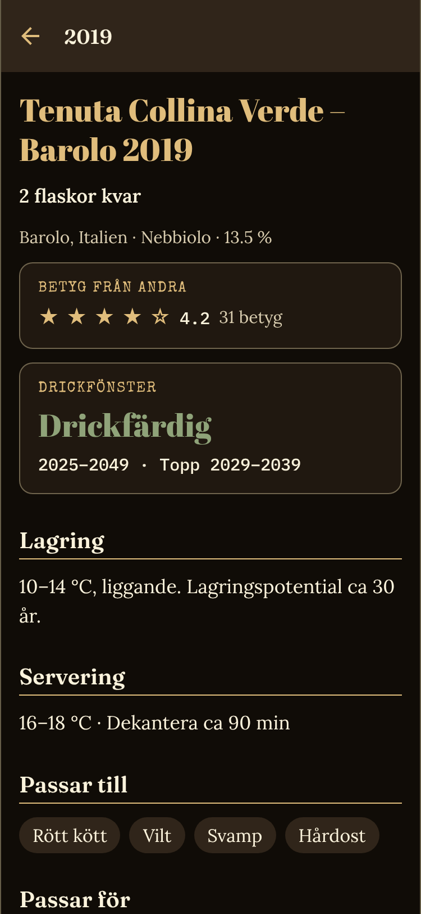
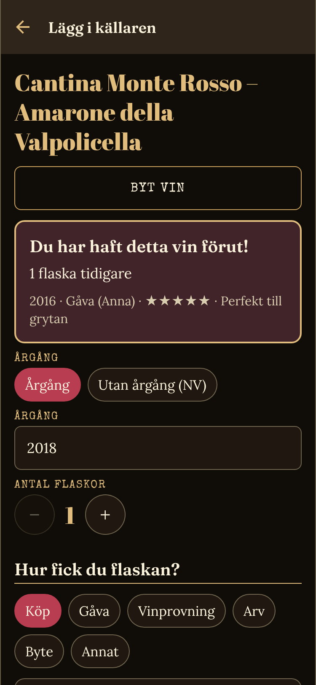

TrandWine
Håll ordning på vinerna.
En enkel app för dig som vill komma ihåg vilket vin som var bra och vad som ligger i källaren. Skanna flaskan, så får du råd om när den är bäst att dricka, vad den passar till och vad den kostar.
Vad hette det där vinet?
Man dricker ett riktigt bra vin, och månaden efter minns man inte namnet, årgången eller var man köpte det. Anteckningar blir spridda och förloras.
Allt om ditt vin på ett ställe.
Spara viner, betyg och egna anteckningar. Se vad du har hemma och vad som är värt att köpa igen, utan krångliga system.
- Samla viner du provat med betyg och anteckningar
- Överblick över det du har hemma
- Historik med betyg på det du druckit
Källaren och flaskan i appen.



Det här kan appen.
Skanna eller fota etiketten
Skanna streckkoden eller fota etiketten, så hittar appen vinet. Hittas det inte lär sig appen koden till nästa gång.
Överblick över källaren
Se vad du har hemma, grupperat på typ och druva. Sortera på land, region, inlagd, inköpt eller pris, och filtrera på drickfärdigt eller lagras.
Råd om dricktid, servering och mat
Drickfönster, lagring, serveringstemperatur och vad vinet passar till, utifrån typ, druva, område och årgång.
Pris från Systembolaget
Saknar du eget pris visar appen Systembolagets pris när vinet finns i sortimentet, och en prisindikation när träffen är osäker.
Betyg och anteckningar
Spara betyg och egna anteckningar, se vad andra tycker och få veta när du haft ett vin tidigare.
Lär dig mer om vinet
Läs om druvan och området: karaktär, klimat och jordmån, med källor.